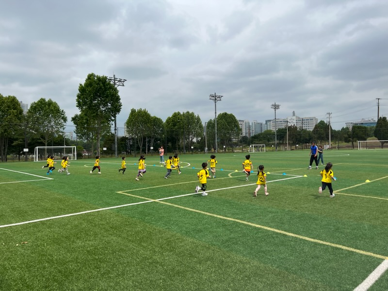
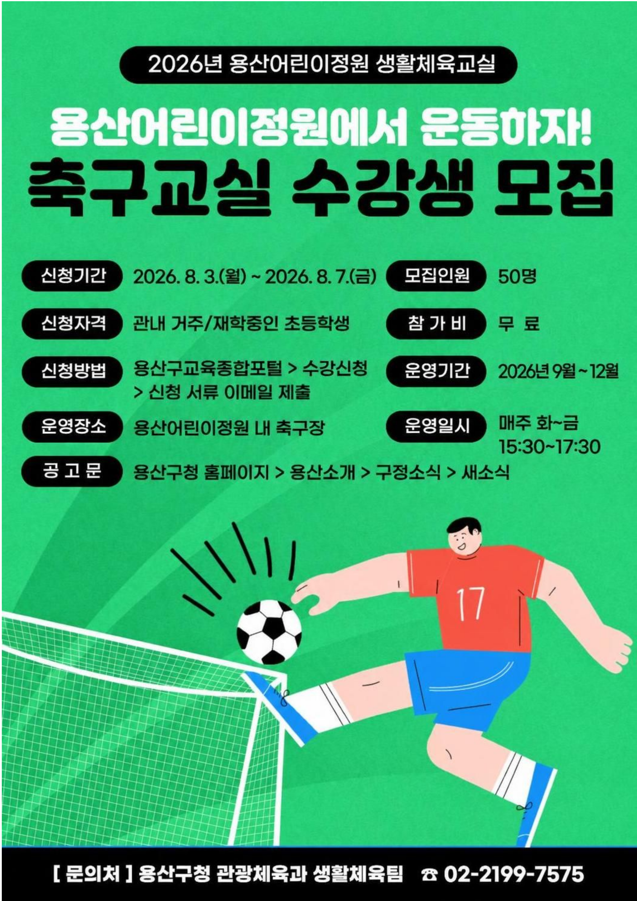

용산어린이정원 축구교실 하반기 수강생 모집…8월 3~7일
유아·초등 무료 생활체육, 화~금 주 2회 운영


[시사포커스 / 김재록 기자] 서울 용산구(구청장 김경대)가 오는 8월 용산어린이정원 내 스포츠필드 축구장에서 '2026년 하반기 생활체육교실(축구)' 수강생을 모집한다. 용산구에 따르면, 이 프로그램은 관내 유아 및 유소년의 건강한 성장과 생활체육 참여 기회 확대를 위해 2023년부터 운영해 온 무료 프로그램이다. 어린이들이 안전하고 쾌적한 환경에서 규칙적인 신체활동을 즐기며 축구의 기초를 체계적으로 배울 수 있도록 설계됐다.
프로그램은 관내 어린이집 및 유치원을 대상으로 하는 유아축구와 관내 거주 또는 재학 중인 초등학생 대상의 초등축구로 나뉘어 운영된다. 수업은 매주 화요일부터 금요일까지 반별 주 2회 진행되며, 유아축구는 오전 10시부터 낮 12시 사이 1시간 과정, 초등축구는 오후 3시 30분부터 5시 30분까지 2시간 과정이다. 모집 기간은 8월 3일부터 8월 7일까지이며, 유아축구는 8개 기관, 초등축구는 50명을 선착순 모집한다. 김경대 용산구청장은 "아이들이 생활체육을 자연스럽게 즐길 수 있도록 프로그램 운영에 내실을 기하겠다"라며 "앞으로도 공공시설을 활용해 아이들이 일상 가까이에서 생활체육을 접할 수 있는 기반을 넓혀가겠다"라고 말했다.
신청 방법은 대상별로 다르다. 유아축구는 전자우편으로 접수하며, 초등축구는 용산구교육종합포털에서 수강신청 후 학생증 등 증빙서류를 전자우편으로 추가 제출해야 한다. 이번 프로그램은 공공 체육시설을 활용한 완전 무료 과정으로, 학부모와 보육 현장의 경제적 부담을 낮추고 어린이들의 사회성과 체력을 함께 기를 수 있는 기회가 될 것으로 기대된다. 기타 자세한 사항은 용산구 누리집을 참고하거나 관광체육과(02-2199-7575)로 문의하면 된다.